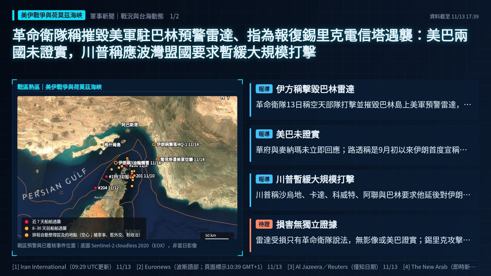
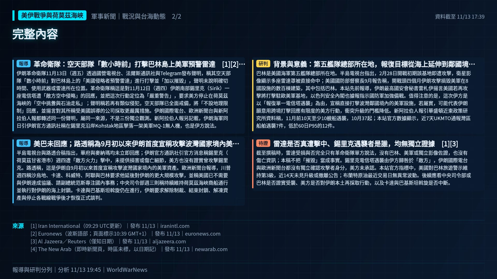

革命衛隊稱摧毀美軍駐巴林預警雷達、指為報復錫里克電信塔遇襲：美巴兩國未證實，川普稱應波灣盟國要求暫緩大規模打擊


報導革命衛隊：空天部隊「數小時前」打擊巴林島上美軍預警雷達
伊朗革命衛隊11月13日（週五）透過國營電視台、法爾斯通訊社與Telegram發布聲明，稱其空天部隊「數小時前」對巴林島上的「美國侵略者預警雷達」進行打擊並「加以摧毀」，聲明未說明確切時間、使用武器或雷達所在位置。革命衛隊稱這是對11月12日（週四）伊朗南部錫里克（Sirik）一座電信塔遭「敵方空中侵略」的回應，並把這次行動定位為「嚴重警告」，要求美方停止在荷莫茲海峽的「空中挑釁與石油走私」；聲明稱若再有類似侵犯，空天部隊已全面戒備，將「不設地理限制」回應，並揚言對其所稱受美國誤導的公司採取更嚴厲措施。伊朗國際電台、歐洲新聞台與新阿拉伯人報都轉述同一份聲明，屬同一來源，不是三份獨立觀測。新阿拉伯人報另記載，伊朗海軍同日引伊朗官方通訊社稱在錫里克沿岸Kohstak地區擊落一架美軍MQ-1無人機，也是伊方說法。
報導美巴未回應；路透稱為9月初以來伊朗首度宣稱攻擊波灣國家境內美軍資產
半島電視台與路透合稿指出，華府與麥納瑪均未立即回應；伊朗官方通訊社引官方消息稱錫里克（荷莫茲甘省港市）週四遭「敵方火力」擊中，未提供損害或傷亡細節，美方也沒有證實曾攻擊錫里克。路透稱，這是伊朗自9月初以來首度宣稱攻擊波灣國家境內的美軍資產。歐洲新聞台報導，川普週四稱沙烏地、卡達、科威特、阿聯與巴林要求他延後對伊朗的更大規模攻擊，並稱美國已不需要與伊朗達成協議、請副總統范斯專注國內事務；中央司令部週三則稱持續維持荷莫茲海峽商船通行並執行對伊朗的海上封鎖。卡達與巴基斯坦斡旋仍在進行，伊朗要求解除制裁、結束封鎖、解凍資產與停止各戰線戰爭後才恢復正式談判。
研判背景與意義：第五艦隊總部所在地，報復目標從海上延伸到鄰國境內
巴林是美國海軍第五艦隊總部所在地。半島電視台指出，2月28日開戰初期該基地即遭攻擊，衛星影像顯示多座雷達罩被直接命中；美國國防部督察長9月報告稱，開戰頭四個月伊朗攻擊損毀美軍在8國設施的數百棟建築，其中包括巴林。本站先前報導，伊朗最高國安會秘書雷札伊揚言美國若再攻擊將打擊駐歐美軍基地，以色列安全內閣也據報指示國防軍加強備戰。值得注意的是，這次伊方是以「報復單一電信塔遇襲」為由，宣稱直接打擊波灣鄰國境內的美軍設施，若屬實，可能代表伊朗願意用跨境打擊回應有限度的美方行動，衝突升級的門檻降低。新阿拉伯人報引華盛頓近東政策研究所資料稱，11月前10天至少10艘船遇襲，10月37起；本站官方數據顯示，近7天UKMTO通報灣區船舶遇襲7件，低於60日P95的12件。
待證雷達是否真遭擊中、錫里克遇襲者是誰，均無獨立證據
截至撰稿時，雷達受損與否完全只有革命衛隊單方說法，沒有巴林、美軍或獨立影像佐證，也沒有傷亡資訊；本稿不把「摧毀」當成事實。錫里克電信塔遇襲由伊方歸咎於「敵方」，伊朗國際電台與歐洲新聞台都沒有獨立確認攻擊者身分，美方未承認。本站官方指標中，美國對巴林旅遊警示維持第3級，近14天未見升級或撤離公告；布蘭特原油最近交易日無異常波動。後續應看中央司令部或巴林是否證實受襲、美方是否對伊朗本土再採取行動，以及卡達與巴基斯坦斡旋是否中斷。
- [1] Iran International（09:29 UTC更新）｜發布 11/13
- [2] Euronews（波斯語部；頁面標示10:39 GMT+1）｜發布 11/13
- [3] Al Jazeera／Reuters（僅知日期）｜發布 11/13
- [4] The New Arab（即時新聞頁，時區未標，以日期記）｜發布 11/13